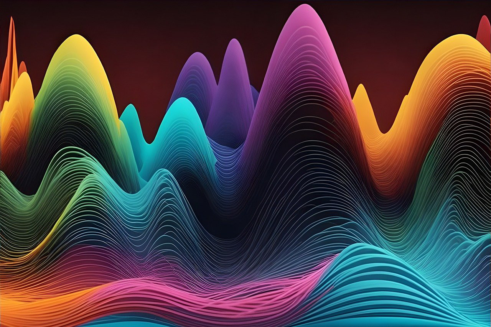
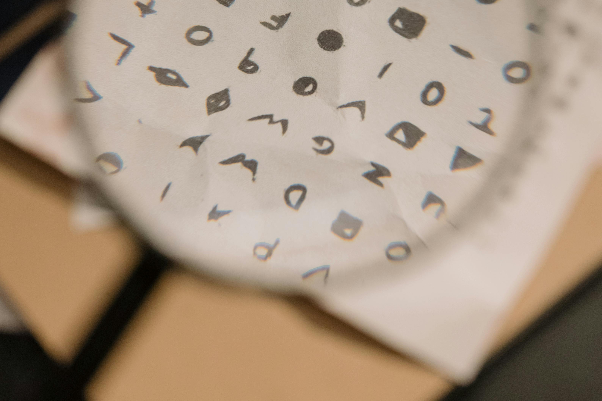
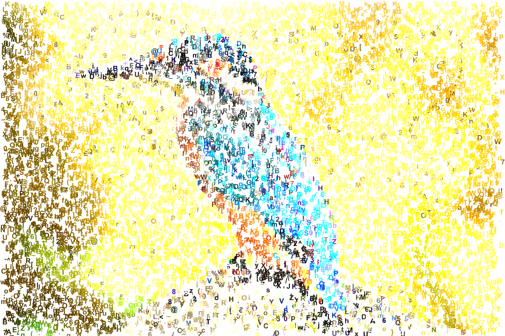

Digital
Digital systems are all around us, from smartphones to computers. The term “digital” refers to the use of discrete values, typically the numbers 0 and 1, to represent information. Unlike analogue systems, which use continuous signals, digital technology encodes data into these two discrete values, 0 and 1, making it easier to store, process, and send information.
Analogue vs. Digital: What are Continuous Signals?

In analogue systems, information is represented using continuous signals. This means that data is stored or transmitted as a smooth, uninterrupted wave, where any value between a minimum and maximum can be represented. For example, an analogue signal can take any value between 0 and 1, including numbers like 0.1, 0.55, or 0.9999. This smooth, continuous variation is how real-world phenomena, like sound, light and data obtained from human subjects, are naturally represented.
However, while analogue systems capture more detail due to this continuity, they are also more prone to distortion or noise. Even small amounts of interference can alter an analogue signal, reducing its reliability.
In contrast, digital systems break information down into discrete steps. Rather than storing or transmitting a continuous wave, digital systems sample the data at regular intervals and convert these samples into binary numbers (0s and 1s). For example, instead of recording every point on a smooth wave of sound, a digital system takes many small snapshots of the wave. These snapshots are stored as discrete whole numbers, which makes digital systems more resistant to noise and interference.
Examples of Digital Technology
- Computers: Digital technology forms the basis of modern computers, allowing them to process huge amounts of data quickly and accurately.
- Telecommunications: Digital systems have changed the way we communicate, from mobile phones to the internet, allowing us to connect instantly across the globe.
- Multimedia: Whether it’s images, music, or video, digital technology makes it easy to create, edit, and share media with others.
- Automation: Digital systems control everything from home appliances to industrial machines, making our lives more efficient and automated.
Encoding Information

To turn human-readable information, like letters and pictures, into binary, encoding systems are used. An encoding system is a set of rules or formats that convert data from one form into another—typically from something humans can easily understand, like text or images, into binary, which computers can process.
For example, in text encoding systems like ASCII (American Standard Code for Information Interchange), each letter, number, or symbol is assigned a unique binary number.
Let’s take the letter “A” as an example. In the ASCII encoding system, the letter “A” is represented by the decimal number 65. Decimal is the numbering system we use every day, based on ten digits (0-9), while binary is based on only two digits (0 and 1). When you convert this decimal number into binary, it becomes 01000001. So, when you press the letter “A” on your keyboard, the encoding system translates it into the binary sequence 01000001 that the computer can process. This binary sequence is then stored or transmitted as a series of electrical signals that represent 0s and 1s.
Similarly, every letter and symbol has its own unique binary code. For example:
- The lowercase “a” is represented by 97 in ASCII, which translates to 01100001 in binary.
- The space character is represented by 32 in ASCII, which is 00100000 in binary.
This process allows computers to handle and store text as a series of 0s and 1s, making it possible for digital systems to manipulate and display information.
Encoding Images and Sound

Similarly, for images or audio, there are specific encoding systems like JPEG for pictures or MP3 for sound files. These systems break down visual or auditory data into binary form, allowing computers to store, manipulate, and share them efficiently. Without encoding, digital devices wouldn’t be able to process the information that we interact with daily.
How Digital Technology Evolved
Digital technology has come a long way, starting with simple machines and growing into the powerful systems we use today. Some key developments include:
- The First Digital Computers: Early computers used binary logic to perform basic calculations, setting the stage for modern computing.
- Microprocessors: The invention of the microprocessor made it possible to shrink computers, leading to personal computers and portable devices like smartphones.
- The Internet: The development of digital communication networks, such as the internet, connected the world and made it easier to share information.
- Data Storage: Digital storage systems have improved, making it possible to store massive amounts of data, which is essential for applications like cloud computing and big data.
The Impact of Digital Technology on Society
Digital technology has transformed many areas of life, making processes faster, more reliable, and more accessible. Some key impacts include:
- Processing Information: Digital systems can process data quickly and accurately, helping us solve problems and analyse information in fields like science and business.
- Connecting People: Digital communication tools, such as the internet and mobile phones, have brought people together, allowing us to share ideas and information instantly.
- Storing Data: The ability to store large amounts of data digitally has led to innovations like big data and cloud computing, which are essential for modern industries.
- Automation: Digital systems have automated many tasks, making everything from manufacturing to household chores more efficient and reliable.
Conclusion
Digital technology, powered by binary logic, forms the foundation of many systems we rely on today. It enables the processing, storage, and sharing of vast amounts of data, supports global communication, and automates complex tasks. In healthcare, digital systems are transforming patient records, diagnostics, and care delivery. However, one challenge remains: much of the real-world information, like medical images or heartbeats, starts as analogue data. Converting this data into digital form can lead to a loss of detail or introduce errors, highlighting the need for precise and reliable analogue-to-digital conversion. As digital systems continue to evolve, understanding these foundational concepts is crucial—not just for navigating the modern world, but for ensuring accuracy and trust in fields like healthcare, where the stakes are highest.